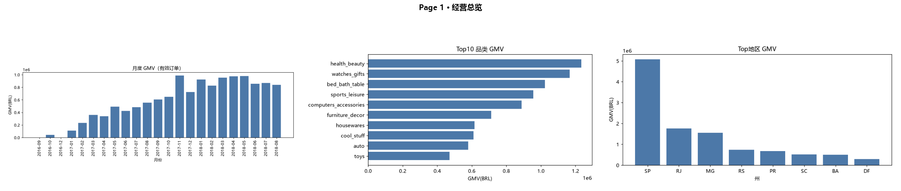

3.00%
复购结构偏弱
93,358 名有购买用户中，仅 2,801 人达到至少 2 单；90,557 人只完成 1 单，占购买用户约 97%。
复购用户相邻购买间隔中位数为 29 天，可把首购后约 30 天作为二次购买激励的实验窗口。
基于 Olist 真实电商数据，从原始数据清洗、多表建模、指标口径设计，到经营、用户、商品卖家与物流体验分析，形成一套可复现、可追问的端到端数据分析作品。

以下数字均来自仓库现有分析结果；策略建议与数据事实分开表达，不把相关关系写成因果。
93,358 名有购买用户中，仅 2,801 人达到至少 2 单；90,557 人只完成 1 单，占购买用户约 97%。
准时订单平均评分 4.30，超时订单仅 2.57；配送超过 15 天的订单平均评分降至 3.60。
前 2% 头部卖家贡献 35.97% GMV，2%–20% 腰部贡献 46.31%，80% 长尾仅贡献 17.71%。
Dashboard 使用仓库真实结果渲染。点击标签切换，完整交互版本可单独打开。
每个 Case 都把业务问题、技术方法、数据结果和结论边界拆开，避免“为了用函数而用函数”。
何时触发首购后的二次购买运营，更接近用户真实复购节奏？
使用 LAG() 按 customer_unique_id 计算相邻两次有效订单间隔。
将约 30 天视为值得验证的二次购买激励窗口，而不是直接认定为最佳策略。
缺营销触达、会员、渠道等字段，无法判断复购行为由什么因素驱动。
哪些履约环节最值得优先治理，才能减少体验风险？
订单级聚合评价后，对准时/超时、配送时长档位、州和卖家进行分层比较。
优先对高订单量且高超时的地区/卖家做履约链路审计与预警。
评分与超时是相关关系，商品质量、地区距离等混淆因素尚未控制。
供给侧是否存在集中度风险，以及腰部卖家是否值得培育？
按卖家 GMV 排序并使用窗口排名/累计口径划分头部、腰部、长尾。
监控头部依赖，同时识别有增长潜力的腰部卖家和低效长尾供给。
当前数据没有卖家利润、补贴与服务成本，因此这里只讨论 GMV 集中度。
这个项目最重要的能力证据之一，是对多表关系和指标口径的审计，而不是直接沿用教学项目结果。
customer_id 是订单维度标识；分析用户复购时使用 customer_unique_id 去重，否则会把同一用户的多次订单误算成多个人。
全部订单直接计算会把 canceled / unavailable 等非交付订单混入。当前口径下，不筛状态会让 GMV 虚增约 2.8%。
订单口径orders → order_items 为 1:N，JOIN 后直接 COUNT 行数会把多商品订单重复计数，因此 AOV 分母使用不同订单数。
支付可能多笔、评价可能同单多条；支付金额不能直接替代商品 GMV，评分先聚合到订单级再比较。
多表建模重点不是堆技术，而是保证每一步都有明确职责，并且关键指标可以复现。
Olist 多张原始业务表，覆盖订单、用户、商品、卖家、支付、评价与品类信息。
数据质量检查、缺失/重复检查、类型转换与清洗。
构建关系模型并导入清洗后的业务表，明确 1:N 关系与外键。
7 个主题文件、30+ 条业务 SQL，覆盖经营、用户、商品、卖家、物流与评分。
把指标转成经营判断、业务建议与交互式可视化；Power BI 重建方案另有文档。
它展示的是：如何定义指标、避免重复统计、用 SQL 回答经营问题，并把结果落到可验证的业务建议。